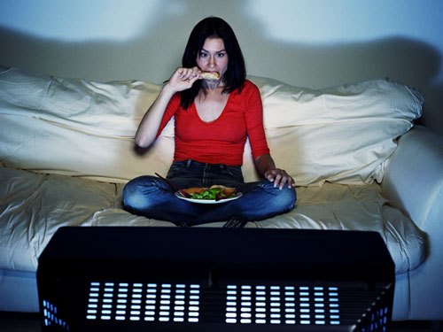
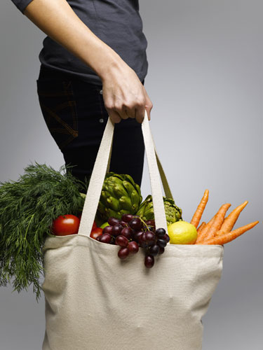
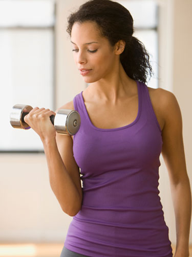

1. Don't deprive yourself
"Enjoy the foods you love in moderation," encourages Amy Shapiro MS, RD, CND, of Real Nutrition NYC. "No single food makes you gain weight, the portions are what matters."
2. Eat until you feel satisfied, not full
You've heard this before. Etiquette author Emily Post believed that a polite lady should put down her fork between every bite, a technique that also helps you realize when to stop eating before you feel bloated.
3. Make sure half of your plate contains veggies
"Vegetables are filled with fiber and water so they fill you up without filling you out," says Shapiro.
4. When ordering out, always order a small
"Whether it be coffee, salads, soups, frozen yogurt," says Stephanie Middleberg, MS, RD, CDN of Middleberg Nutrition. "If you want to be small, order that way."
5. Know yourself
"If you can't limit pick-able foods (chips, nuts, grapes, candy, etc.), then make sure you stick to single serving portions, such as handheld fruit, individually-wrapped hummus, nut or nut butter packets," Middleberg explains.
6. Enjoy a salad or soup to start the meal when you dine out
"Both fill you up with low calories and leave less room for the main course," tells Shapiro.
7. Skip the breadbasket
Shapiro warns, "It's just empty calories. My clients follow the pick your "poison" rule: Bread, Drinks or Dessert. You can enjoy one but not all."
8. Leave 1/4 of your food on your plate when dining out
"When we eat out, portions are normally double what we need," explains Middleberg. "The beauty here is that you can eat what you like, just less of it."
9. Stay hydrated
"We get confused and believe that we are hungry when we really are just thirsty. Aim for eight glasses of water a day, add lemon for a flavor and vitamin boost!" adds Shapiro.
10. Make sure your intake isn't top heavy
"Don't restrict yourself all day and then break down at night." Middleberg promises, "If you eat more substantially during the day, the nighttime grazing will taper."
11. Don't eat in front of the TV
"If you are hungry, reach for fiber rich snacks that fill you up on less calories like popcorn, fruit, trail mix," Shapiro says.
12. Have a small snack before going to a party
"Try a handful of nuts or a piece of fruit so that you don't show up ravenous and make poor decisions," Shapiro says.
13. Carry snacks
"This way, you'll always be prepared when hunger hits. Temptation is strong when you are hungry and faced with poor choices—so stash snack bars, or fruit or trail mix in your bag." Shapiro's favorite snack bars are Gnu Food Bars, Kashi Granola bars and KIND fruit and nut bars.
14. Don't drink your calories
Shapiro recommends that you "stick to water or seltzer to keep you hydrated and save the calories for a treat later on."
15. Be a part-time vegetarian
"Give your body a break from animal protein and mix things up," Middleberg suggests.
16. Always choose whole grains and avoid the white stuff
This way, you don't have to cut out carbs entirely. Shapiro breaks it down: "Whole grains keep you full longer, maintain your blood sugar levels and provide you with vitamins and minerals. White flour quickly converts to sugar in your body. If you don't burn it up, you will store it as fat."
17. Eat breakfast
"Breakfast gets your metabolism working and prevents you from eating most of your calories at night," maintains Shapiro.
18. Be active for at least 3 hours each week
Shapiro says, "Even if that means waking up an hour earlier to hit the gym, going for a walk after dinner, hopping off the bus or subway a few stops early or parking your car further than you normally would."
19. But know that exercise isn't everything
Going to the gym does not mean you can reward yourself with a gargantuan dessert later on. Eating well, not exercise, determines whether you will gain or lose weight.
20. Try to avoid the "mish-mosh" dinner
"The problem with having a meal of hummus, crackers, yogurt, etc.," warns Middleberg, "is that these 'snack for meals' often end up being more calories than having a balanced dinner."
21. No eating after dinner
"Calories give us energy. We don't need energy to sleep," Shapiro explains.
22. No BLT's—bites, licks, or tastes
Those can add up, especially when you end up finishing your friend's plate.
23. Don't eat out of the bag
Pour your snack (chips nuts, trail mix) onto a plate or bowl so you can tell how much you’re consuming before you finish the whole bag.
24. No seconds
You just don’t need them. Fullness will take some time to settle in, so even if you don’t feel full, give yourself some time to digest.
25. Stay Away From Artificial Sweeteners
"Artificial sweeteners increase cravings and lead to bloating and fatigue. Go for one teaspoon of sugar in the raw, or honey or maple syrup. One teaspoon is only sixteen calories," says Middleberg.
感谢spider投稿
投稿信箱（逗比传媒）：post@dobemedia.com
投稿信箱（新 蛇 精）：xinshejing@sina.com